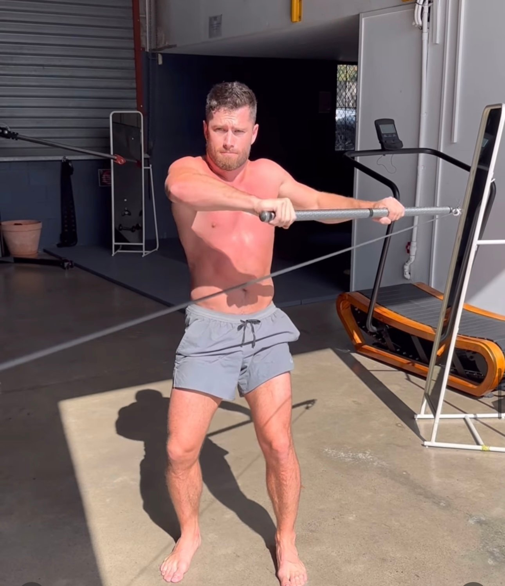

When it comes to fixing bad posture, many products promise quick results. These include posture corrector back braces and shoulder braces. While these tools may seem helpful, they often fail to deliver long-term solutions. Worse, they can create dependency and make the problem worse by weakening your body's ability to support itself naturally.
At Functional Patterns Brisbane, we believe that lasting posture correction comes from functional, integrated movement. It does not come from gadgets like back brace s or neck posture corrector s. Let’s explore why Functional Patterns is better than regular posture fixer s. Fixing the root causes of bad posture is the true solution.
The Problem with Traditional Posture Correctors
Most posture correctors, such as back brace s for rounded shoulders, push your body into a false position. This may make your posture look better for a short time. However, it does not fix the real problems that cause bad postur e.
For example:
-
Wearing a posture correction brace for hours can help you stand tall. However, it does not strengthen the muscles needed for good posture when you take it off.
-
These tools often target a single area, like the shoulders or neck, without considering the interconnectedness of your body.
Research shows that such products can cause muscle atrophy over time by removing the need for your body to stabilize itself. Studies on posture corrector s for men and women show only small improvements in function. People often rely on these devices for a long time.
Functional Patterns’ View: Posture is more than just standing straight. It’s about how your body works together when you move. Without functional movement, even the "best" posture correction braces fall short.

The Root Cause of Poor Posture
At Functional Patterns Brisbane, we address poor posture by identifying and targeting its root cause. Every individual is unique, and their posture is influenced by:
-
Muscle imbalances
-
Lifestyle habits (e.g., sitting for hours at a desk)
-
Dysfunctional movement patterns
-
A history of injuries
Simply placing the spine in alignment with a back posture corrector or shoulder posture corrector doesn’t resolve these issues. Instead, it creates a false sense of improvement while ignoring the need for dynamic movement and muscular integration.
Why Functional Movement Matters:
Functional movement improves posture by training your body to move as a connected system. Research supports the benefits of functional exercises, which enhance range of motion, strengthen key muscle groups, and promote natural alignment. Unlike passive tools, these exercises create lasting changes by teaching your body how to move efficiently and without pain.

Why Functional Patterns Is the Best Posture Corrector
Our method focuses on improving posture by addressing your body’s mechanics holistically:
-
Integration Over Isolation: Functional Patterns doesn’t isolate muscles like a back alignment strap might. Instead, we train your entire body to work together as a system.
-
Dynamic Solutions: Movement-based training prepares your body for real-life situations, like walking, lifting, and even sitting. This is far more effective than wearing a bad posture corrector or relying on a shoulder brace for posture.
-
Personalized Approach: We customize exercises to suit your specific needs, unlike a generic posture corrector for neck hump that assumes one-size-fits-all.

Functional Patterns Posture Before & After
Research Comparison: Functional Movement vs. Posture Correctors
Functional movement has been shown to improve posture long-term by strengthening and integrating the core, hips, and shoulders. Studies highlight that strengthening exercises focused on improving movement patterns lead to better posture and reduced pain.
Research on posture correctors, such as the best back brace for poor posture, shows short-term improvements. However, these devices have limited benefits for function. These tools may reduce neck and back pain temporarily but do not offer the dynamic support needed for lasting results.
Functional Patterns Exercises for Posture Correction
Here are some examples of how Functional Patterns helps you achieve natural, long-lasting posture improvements:
-
Dynamic Core Engagement Instead of static exercises, we focus on teaching your core to activate during movement. This improves alignment without relying on a proper posture brace.
-
Postural Integration We train your body to coordinate the shoulders, hips, and spine, helping you avoid common issues like shoulder pain or tension in the neck. This holistic approach is far more effective than a posture corrector for neck hump or adjustable straps on a brace.
-
Pressure Dynamics Training By addressing internal pressure systems, we help your body achieve balance naturally. This eliminates the need for tools like a good posture corrector or back and posture support devices.

Practical Tips to Improve Posture the FP Way
Improving posture isn’t about quick fixes or forcing your body into alignment—it’s about re-educating your body through intentional, integrated movements. Here’s how you can start:
Focus on Integrated Movements
Rather than isolating muscles, practice exercises that engage your entire body as a system. Functional movements, like rotational core drills or coordinated hip and shoulder exercises, create balance and symmetry in your posture.
Address Postural and Movement Imbalances
Posture issues often arise from imbalances in strength and movement patterns. To correct these, focus on exercises that identify and target weak or overactive areas in your body. This could mean activating underused muscles while releasing tight ones, ensuring proper alignment during movement.
Be Intentional with Your Training
Every exercise should have a purpose. Avoid repetitive, thoughtless movements that reinforce bad habits. Instead, prioritise exercises designed to improve your posture dynamically, such as lunges with rotation or gait cycle drills.
Incorporate Breath-work and Pressure Dynamics
Posture is deeply connected to how you manage internal pressure. Learn to breathe efficiently by expanding your ribcage and using your diaphragm. This improves your ability to stabilize your spine naturally, eliminating the need for external support like a back corrector or shoulder brace for posture.
Train Your Gait Pattern
Your gait (how you walk and move) plays a critical role in your posture. Exercises that replicate and refine your walking mechanics can correct imbalances and ensure your posture aligns during dynamic movement.
Say Goodbye to Bad Posture Correctors
If you’re searching for the best posture brace or the latest back posture corrector, it’s time to reconsider your approach. Functional Patterns offers a sustainable, movement-based alternative to passive tools like a posture corrector back brace. By addressing the root causes of bad posture, we empower you to improve your alignment naturally and permanently.
Ready to experience real posture correction? Contact Functional Patterns Brisbane to learn how our methods can transform your movement and eliminate the need for braces, straps, or gadgets.